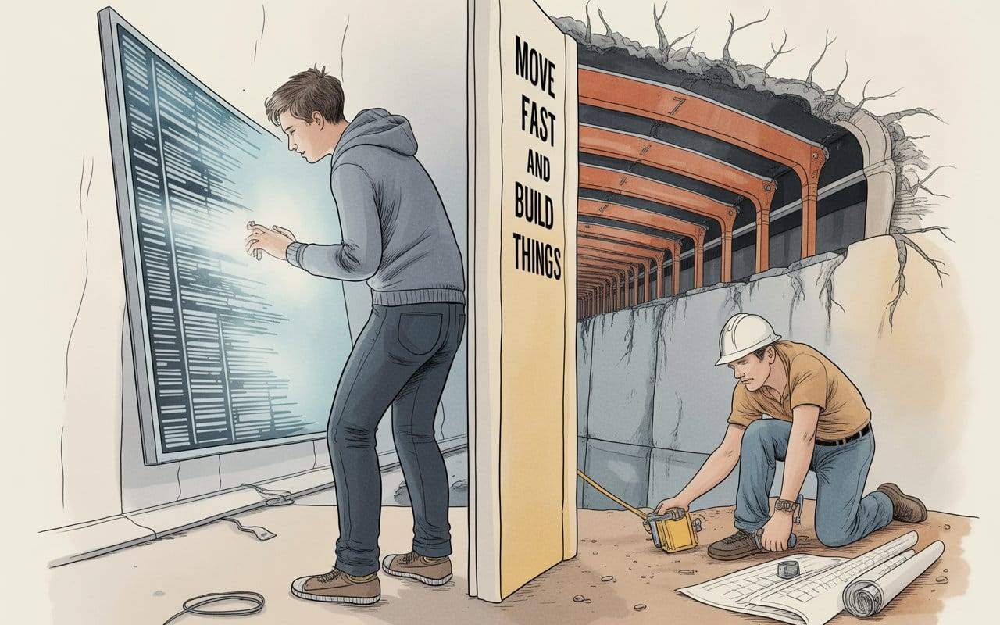
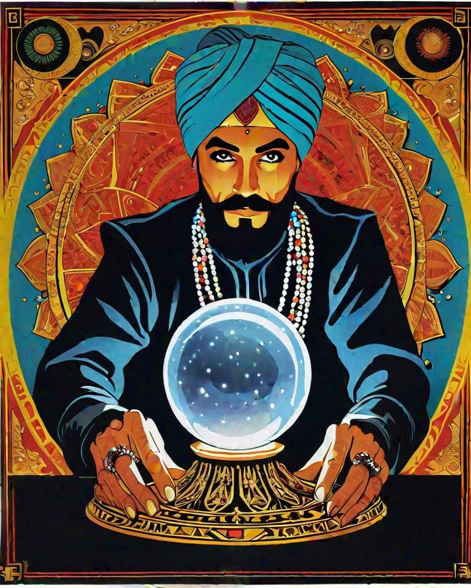

Why Engineers Build, Not Code
Engineers build things. Coders follow instructions. We're creating a generation that confuses symbol manipulation with problem-solving—while bridges collapse and "smart" systems fail because nobody understands both code AND concrete.


According to John Gall,
"A complex system that works is invariably found to have evolved from a simple system that worked. The inverse proposition also appears to be true: A complex system designed from scratch never works."

This week's essay emerges from a growing alarm about what we're calling "engineering" versus what actually builds the world. The catalyst was watching another infrastructure failure while brilliant minds debate AI prompt optimization—a perfect snapshot of our misplaced priorities.
By exploring this dangerous separation between symbol manipulation and physical reality, I hope to challenge how we're training the next generation of builders.
This piece confronts the illusion that coding equals engineering and serves as a wake-up call about what happens when software architects design systems they don't physically understand.

Move Fast and Build Things
Cyberneticians do it better
But who's counting loops?
Look, I need to get something off my chest—something that's been eating at me while I watch this train wreck unfold in real time.
I've spent two decades building systems that bridge the digital and physical worlds—from the technological foundations of Google Street View to quantum information systems. What I'm witnessing now keeps me awake at night (and most days).
Engineers build things. Coders follow instructions.
We're creating a generation that confuses symbol manipulation with problem-solving. Let me explain: when you're manipulating symbols—whether that's writing code, optimizing SQL queries, or even prompt-engineering AI—you're working within existing frameworks. You're rearranging known elements according to established rules. That's valuable work, but it's not engineering.
Engineering happens when you step back and ask:
"What problem are we actually trying to solve?"
Steve Jobs never wrote code—he orchestrated the intersection of technology, design, and human psychology. He looked at how people actually interact with devices, identified the gap between human needs and technical capability, then orchestrated solutions that bridged multiple domains. That's engineering. Social engineering.
And honestly? That distinction might be the most important thing we're losing.
Symbol manipulation optimizes within constraints.
Engineering questions the constraints themselves.

Cognitive Segregation
Here's what worries me: we're creating two completely separate worlds. Software architects designing "smart" cities who've never calculated a load-bearing beam. Civil engineers building bridges who've never thought about how human attention patterns affect interface design. These people might as well be speaking different languages.
This separation isn't just inefficient. It's dangerous. When autonomous vehicle algorithm designers don't understand metallurgy, and road engineers don't understand machine learning, you get intersections where human psychology, materials science, and computational decision-making converge in ways nobody anticipated.
The failures aren't just technical—they're blind spots that happen precisely because no single expert can see the whole picture.
Everything Sits on Something Else

Every "smart" system sits on layers of physical infrastructure that most software architects have never seen. I've watched IoT developers design sensor networks that completely ignore basic electrical load calculations, then act genuinely surprised when their systems fail during peak demand. Smart building designers create interfaces assuming HVAC systems respond instantly to commands—apparently nobody told them about thermal mass or how long it actually takes to cool a building.
Once you've seen enough of these failures, they become depressingly predictable. That Tesla charging network everyone celebrates? It only works because electrical engineers calculated three-phase power distribution for thousands of locations. Your data center's uptime depends entirely on mechanical engineers who designed cooling systems around actual thermodynamics, not the simplified models in your monitoring dashboard.
I consulted on a smart city traffic system that crashed during rush hour. Why? The software team had no idea that radio interference from construction equipment could disrupt their sensor arrays. Nobody thought to ask.
Look, we don't need fewer programmers. We need people who can think about electron flow and user experience at the same time. Materials science and machine learning algorithms. These aren't separate problems—they're pieces of the same puzzle.
Engineering vs. Symbol Manipulation
I designed and manufactured stereoscopic VR camera systems back in the day. The challenge wasn't coding—it was understanding how human binocular vision processes depth cues and how lens distortion affects spatial perception. I had to calculate the right inter-pupillary distance for the average human, then mathematically align that to 16 lenses being stitched together in real time. The goal? Ensure signal processing latency didn't impact presence in your mirrored reality—4K per eye.
The ultra-wideband positioning networks were similar. They required grasping electromagnetic wave propagation through different materials, antenna radiation patterns, and how multi-path interference creates positioning errors. Real physics.
You can't prompt-engineer your way around physics. These systems demanded understanding how everything interacts, then building solutions that actually work. Code comes last—after you've solved the real problem. Those hard problems are most often solved
AI Won't Save Us From Physics
AI amplifies capabilities the same way a calculator amplifies math skills—only if you understand what you're calculating. Without that foundation, you're just generating confident-looking wrong answers at unprecedented speed. Or giggling at calculator displays like middle schoolers discovering 80,087,355.
We're training people to think like search engines instead of engineers. Instead of wrestling with constraints until breakthrough insights emerge, they're learning to optimize queries. But engineering's core skill isn't asking better questions—it's recognizing when answers violate physical reality, even when those answers sound perfectly reasonable.
Here’s the deeper problem—we're losing the mental muscles that create actual innovation. Breakthrough insights emerge from wrestling with constraints until you see unexpected connections. When you outsource that struggle to AI, you lose the mental friction that creates solutions genuinely outside existing training data. Innovation requires the discomfort of not knowing—something that frictionless answer generation actively prevents.
Meanwhile, in the Real World
While the industry debates prompt engineering techniques, actual engineering continues:
- Quantum compression algorithms that redefine information density
- Distributed sensor networks monitoring infrastructure in real-time
- Ultra-wideband systems for precision positioning
- Telepresence tech that actually solves human connection problems
- Gravity-based energy storage systems that work without rare earth mining
Each of these demands understanding across multiple physical domains simultaneously. Quantum compression? You need information theory, semiconductor physics, thermal management. Sensor networks? RF engineering, power systems, environmental science. You can't GPT your way through electromagnetic interference patterns or thermal expansion coefficients.
What's Actually Breaking
This isn't some abstract problem. Bridge failure rates are accelerating. Grid instability events are increasing. Water system breakdowns are becoming routine. But we're still funneling talent toward apps and algorithms while physical systems deteriorate.
Here's the mismatch: we need people who can diagnose why a water treatment plant's control system fails during peak demand—which requires understanding both programmable logic controllers and fluid dynamics. We need engineers who can design smart grid systems that actually improve electrical distribution rather than just collecting data about it. It's not either-or. It's both.
Moving Fast vs. Building Things That Work
"Move fast and break things" works for user interfaces. It's catastrophic for infrastructure. Bridge management systems don't get rollback buttons. When they crash, real things break.
Real engineering means moving fast within the constraints of physics. When I developed positioning systems for emergency response, speed mattered enormously—but the system had to work in collapsed buildings, through smoke, with intermittent power.Those constraints weren't obstacles. They were what made the innovation matter.
You can't iterate around thermodynamics. You can't debug materials fatigue. These constraints force you to understand how things actually work, not just how they appear to work.

So What Now?
The future belongs to people who can connect domains that currently don't talk to each other. Understanding electron movement through semiconductors while grasping how interface design affects human attention. Knowing why concrete cures the way it does and how that impacts smart building sensors. Reading P&ID diagrams and translating them into monitoring systems that actually help operators make decisions.
You don't need to become a polymath. You just need enough cross-domain understanding to spot when your solution breaks something else. When I designed positioning systems for emergency response that had to work in collapsed buildings, I couldn't just solve the RF propagation problem. Concrete and steel change how radio waves behave. Smoke scatters signals. Stressed humans operate devices differently. All of it mattered.
Breakthrough innovations come from seeing connections that specialists miss.Not because they know everything, but because they understand enough about multiple domains to recognize when a solution in one area creates an opportunity—or a catastrophe—in another.
While the industry debates whether AI will replace programmers, the real engineering challenges require exactly the kind of cross-domain thinking that AI can't provide: quantum processors that work in real thermal environments, neural interfaces that mesh with actual brain physiology, fusion reactors that can be maintained by humans in physical space.
The Line in the Silicon
We're at a crossroads. We can keep training specialists (or "agentic workforces"—God help us) that optimize database queries while their server rooms flood every winter because nobody thought about groundwater drainage.
We can keep graduating IoT developers who design sensor networks without knowing that concrete moves. Those expansion joints? They shift six inches seasonally. Goodbye, carefully calibrated network.
Or we can start developing people who understand that when you mount a 5G antenna on a bridge, you need to account for both electromagnetic radiation patterns AND structural vibration frequencies—because when rush hour traffic hits resonance with your signal processing, both systems fail in ways neither specialist saw coming.
This choice determines everything. Do we get infrastructure that works, or impressive dashboards while water mains burst and "smart" traffic lights create gridlock because ice affects sensors the same way it affects road traction?
I've spent twenty years watching systems fail at exactly these intersection points.
Tesla Superchargers that work great until transformers overheat—turns out power isn't infinite. Autonomous vehicles that handle highways perfectly but crash when construction cones create specific RF signatures that kill positioning systems.
These aren't edge cases. They're what happens when domains don't talk.
We need people who can figure out why building HVAC systems interfere with network infrastructure. Not more React optimization specialists.
Guess which one keeps the lights on?
Don't miss the weekly roundup of articles and videos from the week in the form of these Pearls of Wisdom. Click to listen in and learn about tomorrow, today.


Sign up now to read the post and get access to the full library of posts for subscribers only.
 🌶️ iamkhayyam
🌶️ iamkhayyam
Khayyam Wakil is a systems theorist and pioneer in immersive technology, spatial computing, and quantum information systems. His work spans from the technological foundations of Google Street View to Emmy Award-winning immersive experiences and UN humanitarian initiatives. When not designing the future, he's probably fixing hard problems that these experts or full-stack <fill-in-the-blanks> couldn’t solve.